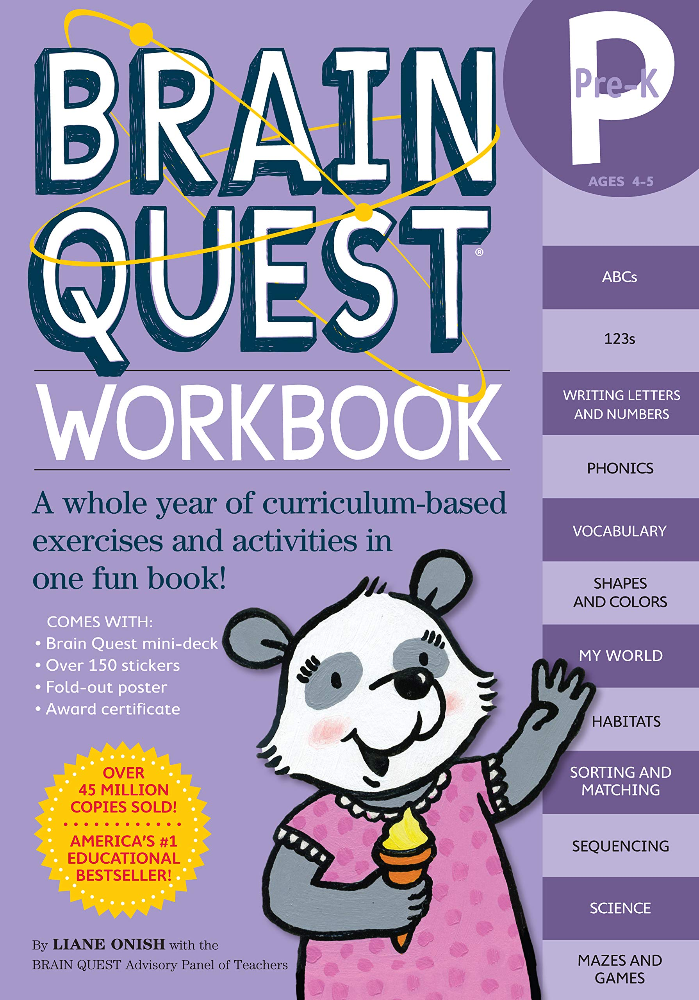
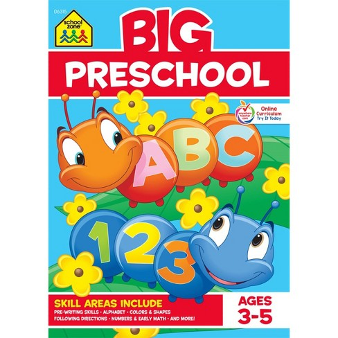
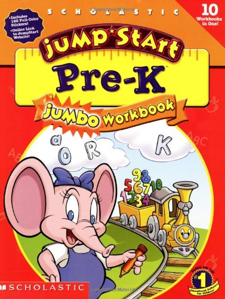
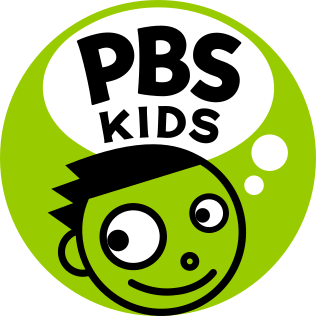
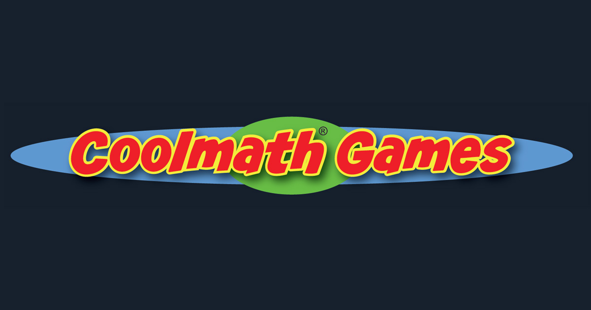

This is one of my favorite activities to do! These summer activities are absolutely free and are even categorized by age. For ages 2-8, there is camp khan kids, and for ages 9 and above, there is camp khan. All you need to do to participate is download the Khan Academy Kids or the Khan Academy app and create an account! For younger learners, there wil be Circle Time, books, and lesson plans. For older learners, they can get a head start in their future grade level skills. The apps can also be separately used as resources. Here is a link to the lesson plans:

Learning a new language is a great way to keep engaged. This will also be a fun activity for the whole family. Duolingo is also free, and can be personalized to fit each family member. Learning a new language is very educational, and if one of the kids are going to middle school, it can be very helpful. Here is a link to the website:

Mimo is a great coding app for kids and adults alike. It starts with the basics of HTML, and then moves on to CSS, and then gradually JS. It is a great way to introduce coding to kids and it teaches them how to create websites. The best part is, all the lessons are free! For accessing more advanced projects though, you may have in-app purchases required. Here is the link to the website:
Well, what can I say? These workbooks are a boon to those who don't believe in digital learning. If looking for workbooks in the summer though, make sure to pick the grade the student is attending in the coming fall. I have enclosed some images of my favorite workbooks to use for Pre-K.
  This is a great way to get some exercise and to have some fun! This is a fun activity for the whole family. You can buy the Just Dance game at a store or search "Just Dance" on Youtube. What are you waiting for, get dancing!
Daily story time is an essential activity. Make it a habit to read at least one book to your kids ,or, let them read books by themselves at a designated time of the day. Stories spark kids imaginations and provides a surefire way of entertainment.
Keep kids learning, even in the summer, with Cox Campus. It has grade-designed courses from preschool to 12th grade! try it today, and let the learning begin. (The link is below.)
Quite unlike the last suggestion, this one is meant for only fun! Watch your favorite PBS kids shows and play games, all in one app! The best part is, it is 100% free!
This website combines a little bit of math and a whole lot of fun! With over one hundred math games to play, children will never tire! If you need a break from the math, check out some of the free time games like Tower of Destiny, and Basketball. Test your general knowledge with fun quizzes! The fun never ends!
This last activity is super easy and super fun. With only a few simple ingredients, create goey, squishy, and playful slime for everyone in your family to play with! Here is a very easy recipe for making slime:
Easy Slime RecipeSinchana Joshi is a sister of a notorious little girl who often runs out of things to do. With her creativity, Sinchana has come up with some boredom-busters for kids of all ages and displayed it in her blog, Boredom Busters.